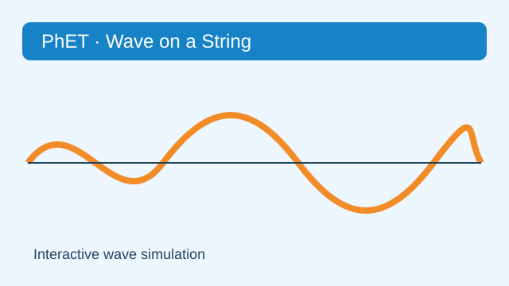
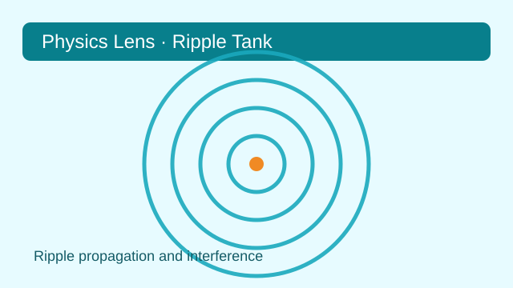
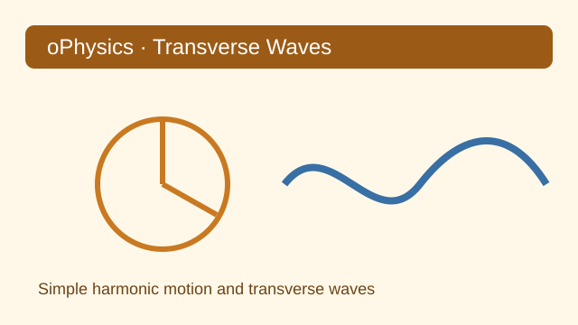
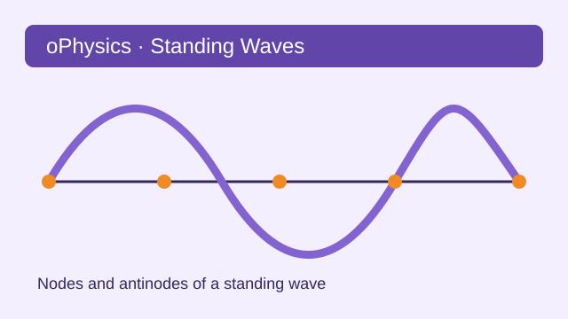

以下僅列出外部模擬的標題、簡短介紹與原始來源；點擊標題即可開啟原網站。
| 縮圖 | 標題 | 文件介紹 | 參考來源 |
|---|---|---|---|
 |
Wave on a String | 調整張力、阻尼、振幅與頻率，觀察繩上的波動與反射。 | PhET Interactive Simulations 原始連結 |
 |
Ripple Tank | 觀察水波的傳播、干涉與繞射現象。 | Physics Lens 原始連結 |
 |
Simple Harmonic Motion, Circular Motion, and Transverse Waves | 連結簡諧運動、圓周運動與橫波的互動示意。 | oPhysics 原始連結 |
 |
Standing Waves | 以互動方式觀察駐波、波腹與波節的形成。 | oPhysics 原始連結 |